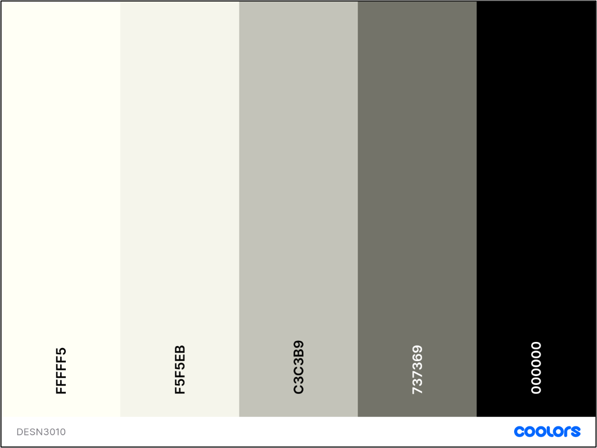
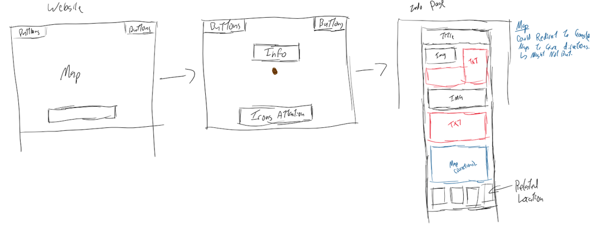
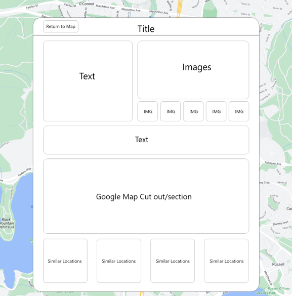
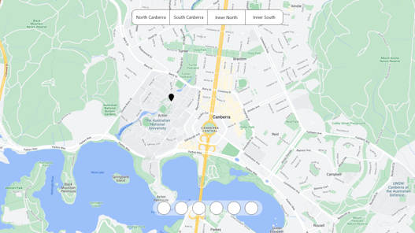
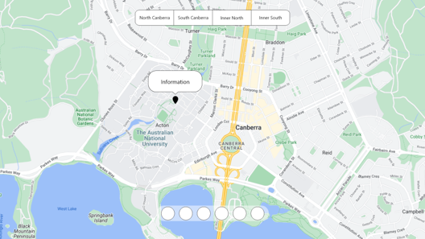
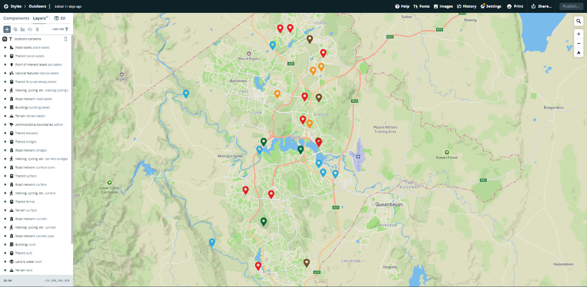

Interactive Map
This assignment I focused on creating an interactive map that highlights locations around Canberra that students are interested in.
Documentation
This project like some other was broken down into two major sections. First section being project development/ideation and the second being the creation of the idea.
For the idea development for this project there was no really set process as we could create a project around any idea we wanted if it solved some issue. The issue I wanted to solve was trying to improve the overall perception of Canberra to ANU students.
For development of the project it first start with researching. This research included a survey and general tourism statistics.
The survey was based around where current ANU students have visited in Canberra so I can highlight other areas of Canberra that have been less visited. After the research I started to brainstorm some ideas to choose a final way to present the project.
From this brainstorming I came up with three different ideas
- Interactive Map via Application
- Interactive Map via Website
- Physical Maps
From these ideas I choose the Interactive Map via Website as it had the most versatility when compared to the others.
From here I choose the colour palette can created the icons to represent the type of locations
Colour Palette

Icons
Next, I started to wireframe the idea to get the ball rolling.
First wireframes

Second wireframes



Coding Decisions
After the wireframes were created the next step was to figure out a platform that would be best for the interactive map to be hosted and designed on.
For this I decided upon MapBox as it was the most versatile while being easy to understand.
The MapBox creation stage was broken into two main steps, placing the locations markers on the map and giving them relevant information.
The relevant information included:
- Type – the type of location that it is.
- Title – the title of the location.
- Area – the region that the location is in from either North, Inner North, Inner South & South.
- Description – Short description of the location.
- Filename – the name of the html file used for coding.
The next step was designing the map was make the icons stand out, as seen below.

Final Website
Once the mapbox creation was done the final step was creating the website which similar to other projects was through iterations with little documentation.
But with that in mind here is the final website.